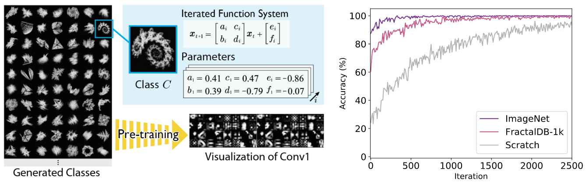
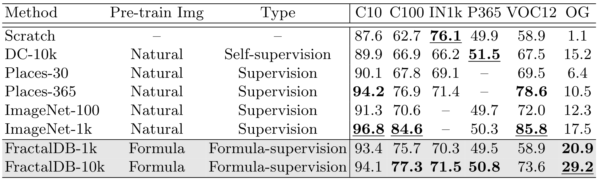

Is it possible to use convolutional neural networks pre-trained without any natural images to assist natural image understanding? The paper proposes a novel concept, Formula-driven Supervised Learning (FDSL). We automatically generate image patterns and their category labels by assigning fractals, which are based on a natural law. Theoretically, the use of automatically generated images instead of natural images in the pre-training phase allows us to generate an infinitely large dataset of labeled images. The proposed framework is similar yet different from Self-Supervised Learning because the FDSL framework enables the creation of image patterns based on any mathematical formulas in addition to self-generated labels. Further, unlike pre-training with a synthetic image dataset, a dataset under the framework of FDSL is not required to define object categories, surface texture, lighting conditions, and camera viewpoint. In the experimental section, we find a better dataset configuration through an exploratory study, e.g., increase of #category/#instance, patch rendering, image coloring, and training epoch. Although models pre-trained with the proposed Fractal DataBase (FractalDB), a database without natural images, do not necessarily outperform models pre-trained with human annotated datasets in all settings, we are able to partially surpass the accuracy of ImageNet/Places pre-trained models. The FractalDB pre-trained CNN also outperforms other pre-trained models on auto-generated datasets based on FDSL such as Bezier curves and Perlin noise. This is reasonable since natural objects and scenes existing around us are constructed according to fractal geometry. Image representation with the proposed FractalDB captures a unique feature in the visualization of convolutional layers and attentions.
Framework
Proposed pre-training without natural images based on fractals, which is a natural formula existing in the real world (Formula-driven Supervised Learning). We automatically generate a large-scale labeled image dataset based on an iterated function system (IFS). (Bottom-left image)
The pre-training framework with Fractal geometry for feature representation learning. We can enhance natural image recognition by pre-training without natural images. (Bottom-right image) Accuracy transition among ImageNet-1k, FractalDB-1k and training from scratch.

Experimental Results
We compared Scratch from random parameters, Places-30/365, ImageNet-100/1k (ILSVRC’12), and FractalDB-1k/10k in the following table. Since our implementation is not completely the same as a representative learning configuration, we implemented the framework fairly with the same parameters and compared the proposed method (FractalDB-1k/10k) with a baseline (Scratch, DeepCluster-10k, Places-30/365, and ImageNet-100/1k). The proposed FractalDB pre-trained model recorded several good performance rates. We respectively describe them by comparing our Formula-driven Supervised Learning with Scratch, Self-supervised and Supervised Learning.

Visual Results
The figures show the activation of the 1st convolutional layer
on ResNet-50 at each pre-training model.
Citation
@article{KataokaIJCV2022,
author = {Kataoka, Hirokatsu and Okayasu, Kazushige and Matsumoto, Asato and Yamagata, Eisuke and Yamada, Ryosuke and Inoue, Nakamasa and Nakamura, Akio and Satoh, Yutaka},
title = {Pre-training without Natural Images},
journal = {International Journal of Computer Vision (IJCV)},
year = {2022}
}
@inproceedings{KataokaACCV2020,
author = {Kataoka, Hirokatsu and Okayasu, Kazushige and Matsumoto, Asato and Yamagata, Eisuke and Yamada, Ryosuke and Inoue, Nakamasa and Nakamura, Akio and Satoh, Yutaka},
title = {Pre-training without Natural Images},
booktitle = {Asian Conference on Computer Vision (ACCV)},
year = {2020}
}
FractalDB-1k (1k categories x 1k instances; Total 1M images).
[Dataset (13GB)]
FractalDB-60 (60 well-known categories x 1k instances; Total 60k images).
[Dataset (1.2GB)]
Acknowledgement
This work is based on results obtained from a project, JPNP20006, commissioned by the New Energy and Industrial Technology Development Organization (NEDO).
This work was supported by JSPS KAKENHI Grant Number JP19H01134.
Computational resource of AI Bridging Cloud Infrastructure (ABCI) provided by National Institute of Advanced Industrial Science and Technology (AIST) was used.